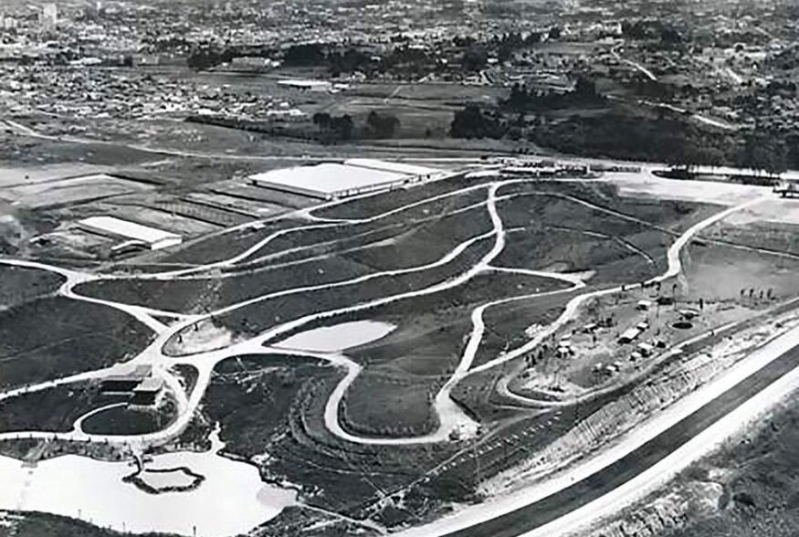
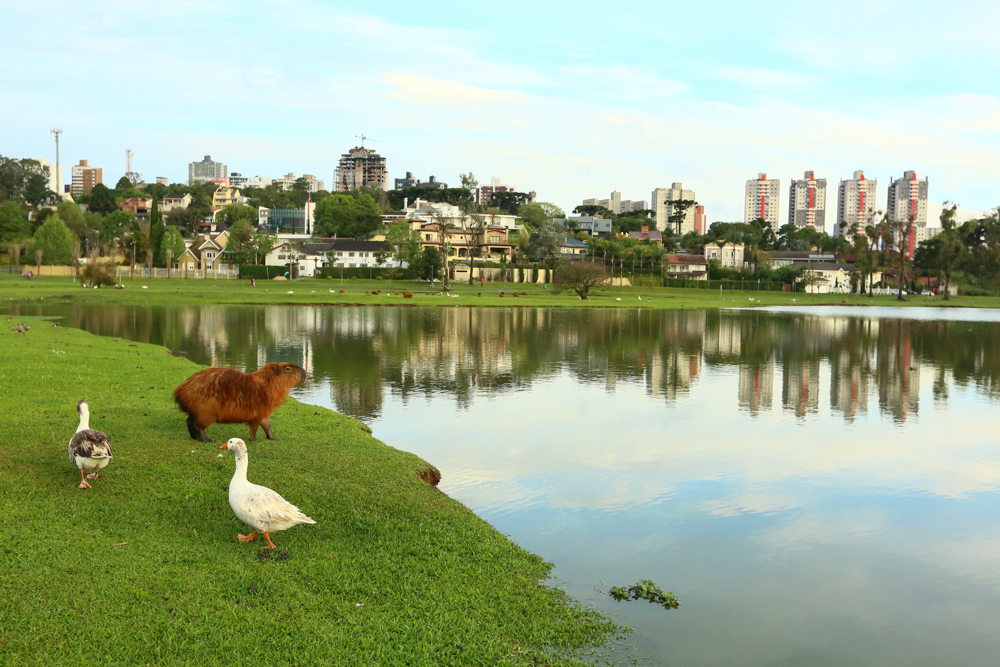

Bem-vindo ao Parque Barigui: natureza e lazer no coração de Curitiba
O Parque Barigui é um dos parques mais famosos e frequentdos de Curitiba, ele fica na região oete da cidade e é gigante: tem mais de 1,4 milão de mestros quadrados. O que será mostrado no site: A estrutura do parque, a natureza com capivaras e arucárias, as atividade de lazer e esporte, e os eventos culturais que acontecem lá Quem está sendo estudado: O parque como espaço público e a população de Curitiba que usa o local para lazer, cultura e convívio. Relação com a arte e cultura do Paraná: O Parque Barigui é cenário de feiras, shows e e exposições. Ele inspira artistas e representa o jeito curitibano de viver a cidade: contato com a natureza e espaços de cultura dentro de Curitiba, também abriga museus que divulgam arte e história.

impotancia para a nossa cidade ser bem vista
por que o parque barigu é um simbolo para a cultura paranaense?
Hitória do Parque Barigui
O Parque Barigui foi criado em 1976 na região oeste de Curitiba-PR, às margens do Rio Barigui. Ele surgiu durante o Plano Diretor de Curitiba para conter enchentes e criar áreas verdes na cidade. No início era só mata nativa de preservação, e com o tempo ganhou pista e caminhada, ciclovia, museus e áreas de lazer. Acontecimentos importantes: a inauguração em 1976, a criação dos museus e a popularização das capivaras como símbolo do parque. Quem participou: a Prefeiturade Curitiba, o IPPUC, urbanistas como Jaime Lerner e a população curitibana que usa o parque até hoje. Hoje o Barigui é um dos maiores parques urbanos do Brasil e representa a união entre natureza, lazer e cultura em Curitiba.

impotancia para a nossa cidade ser bem vista
por que o parque barigu é um simbolo para a cultura paranaense?
Impotância Artística e Cultral do Parque Barigui
Por que é importante: O Parque Barigui é símbolo de Curitiba e repreenta a cultura da "cidade verde" do Paraná. É um espaço onde natureza, arte e convívio social se encontram. Principais características e contribuições: -Cenário cultural: recebe férias, hows e eventos artísticos; -Espaços de arte: abriga o Museu de História Natural e o Museu do Automóvel; -Inspiração: capivaras, lago e araucárias são retratados por artistas e fotógrafos. -Cultura do lazer: o hábito de caminhbar, pedalar e se encontrar no parque faz parte do jeito curitibano. Onde é enontrado: Na região oeste de Curitiba-PR. É ponto turístico, cartão-potal da cidade e espaço de evento culturais da prefeitura.